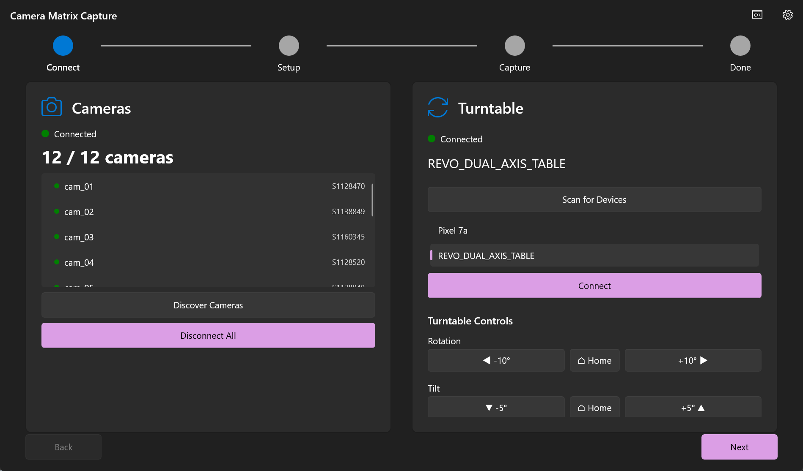

Monograph · 06 · GUI wizard
Core pipeline · operator
GUI wizard
Owns WinUI wizard pages and P/Invoke surface consumption. Must not call Sapera directly. Done when a reader can walk Connect→Setup→Capture→Done and know what each page triggers in the DLL.
The operator never sees C++. Four pages gate the dangerous hardware steps.
Connect
Discover GigE cameras; scan/connect BLE turntable. Calls
CamMatrix_DiscoverCameras, BLE scan APIs.Setup
Presets: Quick 36, Detailed 72, or custom angle step / total rotation / speed. Persists via settings API.
Capture
CamMatrix_StartCapture(session, positions, angleStep, speed). Poll state/elapsed for UI chrome. Stop aborts worker.Done
Show path + image count; open folder. Completion callback may fire success audio.

Connect. Real UI screenshot — engine/app output, not conceptual art.

Capture. Live sequence controls and status.
UI uses DispatcherTimer polling for state/progress plus optional log/progress callbacks marshaled to the UI thread. Never touch camera mutexes from XAML event handlers.
- DispatcherTimer tick (~200–500 ms)
- Read
CamMatrix_GetCaptureState, progress, elapsed capture/rotate ms - Update progress chrome; on terminal state, navigate Done
- Stop button →
CamMatrix_StopCapture→ join worker
No Sapera types in C#
Why
P/Invoke only sees C primitives and callbacks. UI cannot free a SapBuffer* by accident. Hardware failures surface as logs + boolean success, not raw SDK exceptions in XAML.
App/Pages/*Page.xamlWizard surfacesApp/Services/CaptureService.csP/Invoke wrappersrc/api/CaptureAPI.hExported surface area